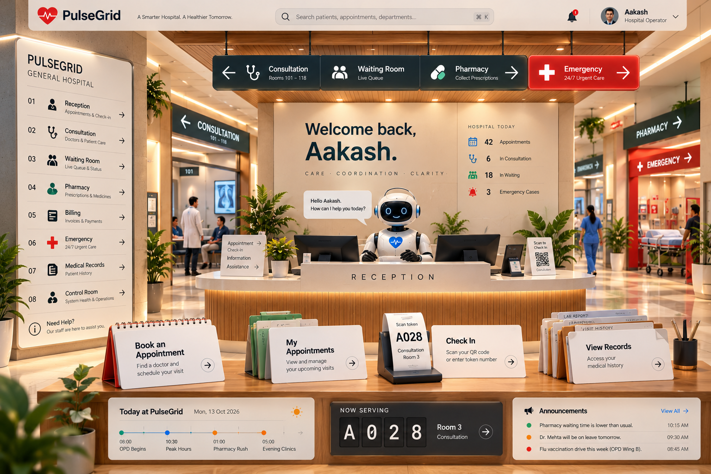
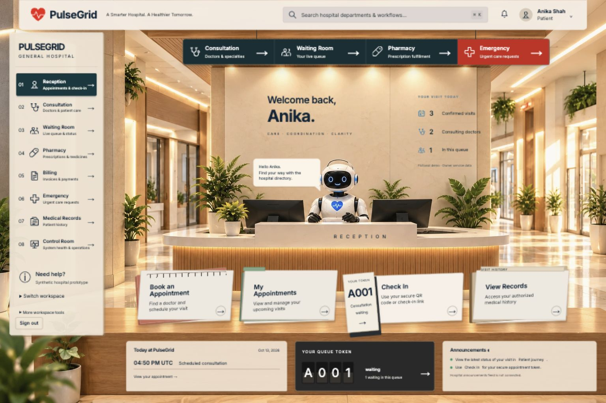
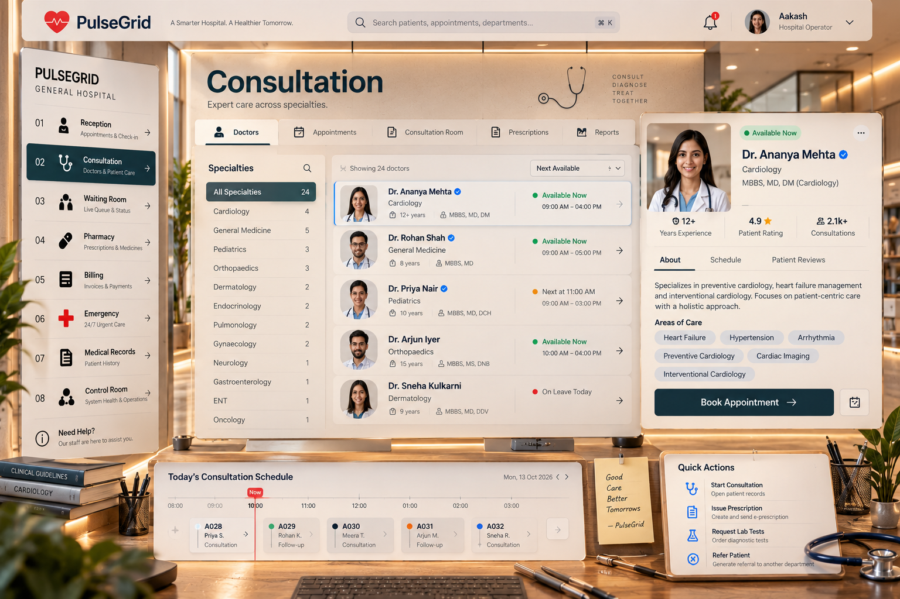
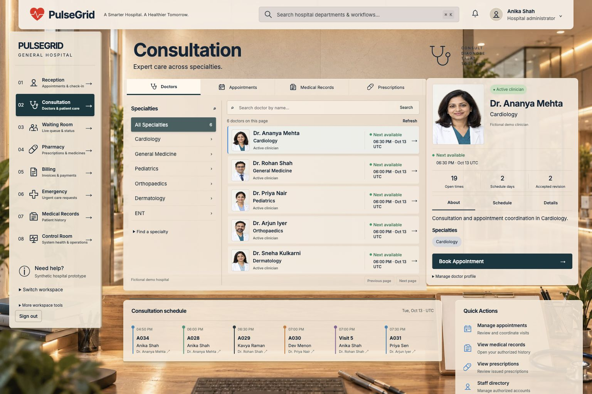

PulseGrid — Reception and Consultation comparisonReception
Approved reference · home.png
Corrected Reception · actual browser
Consultation
Approved reference · consultation.png
Corrected Consultation · actual staff workspace